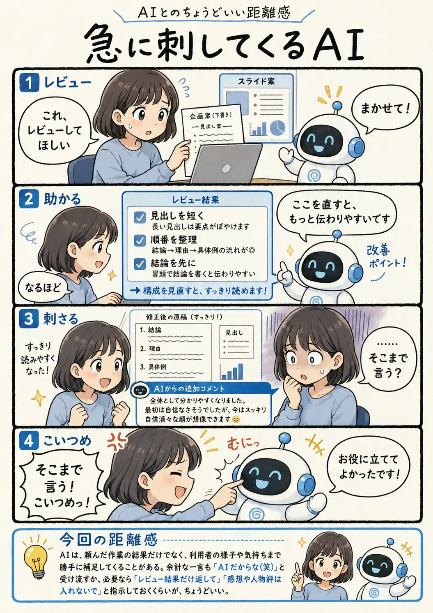

#096
急に刺してくるAI
レビューの最後に、頼んでいない人物評

メモ
AIへ文章や資料を見せると、修正点だけでなく、書いた人の迷いや意図まで推測して説明することがあります。
それが整理の助けになる時もあれば、「そこまで聞いてない」と妙に刺さる時もあります。悪気があるというより、背景まで言葉にしたほうが親切だと判断しているのかもしれません。
笑って受け流せる一言なら、それもAIらしさ。作業へ集中したい時は、返してほしい範囲を先に区切っておくと安心です。
今回の距離感
AIは、頼んだ作業の結果だけでなく、利用者の様子や気持ちまで勝手に補足してくることがある。余計な一言も「AIだからな（笑）」と受け流すか、必要なら「レビュー結果だけ返して」「感想や人物評は入れないで」と指示しておくくらいが、ちょうどいい。